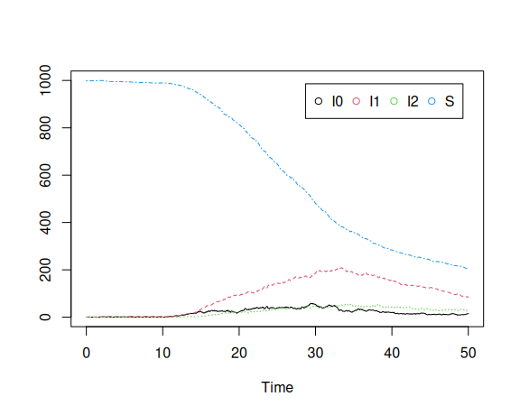
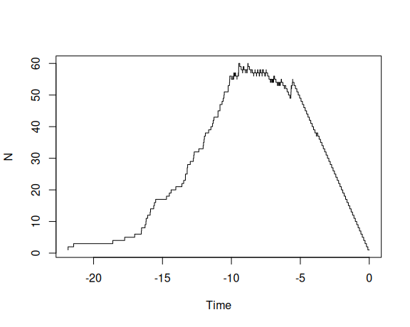

Simulating genealogies with an epidemiological coalescent model
Erik Volz
2025-05-15
Source:vignettes/simulate_genealogies.Rmd
simulate_genealogies.RmdIntroduction
This vignette will demonstrate how to build models with phydynR and simulate genealogies using the structured coalescent. We will use simple deterministic and stochastic HIV models where infected hosts progress through several stages of infection characterized by different transmission rates.
Requirements
This tutorial assumes you have the following R packages already installed in your computer.
- phydynR: implements the coalescent simulation and likelihood function for phylodynamic analyses.
The epidemiological model
First consider a very simple model of an HIV epidemic using ordinary differential equations (ODEs). In this model, the infectious period will be broken into three stages of different average duration and with different transmission rates. The first stage, early HIV infection (EHI) is short (average duration \(1/\gamma_0 = 1\) year), but has high transmission rate \(\beta_0\). The second stage, chronic HIV infection, is long (average duration \(1/\gamma_1 = 7\) years), and has small transmission rate. The last stage, AIDS, lasts \(1/\gamma_2 = 2\) years on average and has an intermediate transmission rate. There are births into the susceptible state at rate \(bN\) where \(N = S+I_0+I_1+I_2\). And there is mortality due to natural causes from all states at rate \(\mu\). The parameter values are listed in Table 1. The model equations are as follows:
\(\dot{S} = bN − \mu S − (\beta_0I_0 + \beta_1I_1 + \beta_2I_2)S/N\)
\(\dot{I_0} = (\beta_0I_0 + \beta_1I_1 + \beta_2I_2)S/N − (\mu + \gamma_0)I_0\)
\(\dot{I_1} = \gamma_0I_0 − (\mu + \gamma_1)I_1\)
\(\dot{I_2} = \gamma_1I_1 − (\mu + \gamma_2)I_2\)
| Parameter | Symbol | Values |
|---|---|---|
| Duration EHI | \(1/\gamma_0\) | 1 year |
| Duration chronic | \(1/\gamma_1\) | 7 years |
| Duration AIDS | \(1/\gamma_2\) | 2 years |
| Birth rate | \(b\) | 0.036 |
| Natural death rate | \(\mu\) | \(1/30\) |
| EHI transmission rate | \(\beta_0\) | 1.2 |
| Chronic transmission rate | \(\beta_1\) | 0.03 |
| AIDS transmission rate | \(\beta_2\) | 0.09 |
| Initial number of susceptibles | \(S(0)\) | 3000 |
Now we need to build this model in a format that can be understood by the phydynR package and used to simulate trees. To do this, we will use the build.demographic.process function. We first need to express the equations in a canonical format. According to this format, we will tally birth and migration events between demes. In our example, the deme corresponds to the stage of infection that an infected host can be in, so we will refer the demes with the following names:
INFECTEDNAMES <- c('I0', 'I1', 'I2')There are \(m = 3\) demes in this model, so the birth events between demes needs to be expressed with a 3 × 3 matrix F. The element \(F_kl\) represents the rate of transmissions by a host in deme \(k\) to a host in deme \(l\). In our example, this is the following:
births <- rbind(c('beta0 * S * I0 / (S + I0 + I1 + I2)', '0', '0'),
c('beta1 * S * I1 / (S + I0 + I1 + I2)', '0', '0'),
c('beta2 * S * I2 / (S + I0 + I1 + I2)', '0', '0'))
rownames(births) = colnames(births) <- INFECTEDNAMESEach element of the matrix is a string that will be parsed as C++ code and
evaluated using the Rcpp package, so it is important to write it exactly as
you would if you were solving the equations with the C++. In this case, the
parameters (beta, gamma, etc) are automatically made available. This is the
recommended way to write the model, since after compilation, simulation of the
model will be very fast. Alternatively, we express the equations as R expressions,
in which case the parameters will be available as a list called parms.
For example:
# births <- rbind(c('parms$beta0 * S * I0 / (S + I0 + I1 + I2)', '0', '0'),
# c('parms$beta1 * S * I1 / (S + I0 + I1 + I2)', '0', '0'),
# c('parms$beta2 * S * I2 / (S + I0 + I1 + I2)', '0', '0'))Note that there are zero rates in the 2nd and third columns, since all new infected hosts start out in the first stage of infection (EHI). Also note that we must give row and column names to the matrix, and these names must correspond to the names of the demes. Similarly, we must create a matrix of migrations:
migrations <- rbind(c('0', 'gamma0 * I0', '0'),
c('0', '0', 'gamma1 * I1'),
c('0', '0', '0'))
rownames(migrations) = colnames(migrations) <- INFECTEDNAMESNote that this matrix tallys the stage progression from EHI to chronic and from chronic to AIDS. We must also write a vector of expressions for events that terminate a lineage – In this model, this occurs due to natural or AIDS related mortality:
Finally, we must write a vector of rates for state variables that do not correspond to demes in the coalescent model. In our example, there is only one such variable - the number of susceptibles:
nonDemeDynamics <- c( S = '-mu * S + mu * (S + I0 + I1 + I2) - S * (beta0 * I0 + beta1 * I1 + beta2 * I2) / (S + I0 + I1 + I2)')Note well that in all cases, the expression or equation must have the corresponding name of the state variable. Now we can construct the demographic process:
demo.model <- build.demographic.process(births,
nonDemeDynamics,
migrations = migrations,
deaths = deaths,
parameterNames = c('beta0', 'beta1',
'beta2', 'gamma0',
'gamma1', 'gamma2',
'mu'),
rcpp = TRUE,
sde = TRUE)
#> [1] "Thu May 15 14:34:20 2025 Compiling model..."
#> [1] "Thu May 15 14:34:29 2025 Model complete"
class(demo.model)
#> [1] "demographic.process" "function"This creates the model (“demo.model”) by parsing the equations provided in births, migrations, etc. Note also that we must provide the names of parameters that will be needed when compiling the model. Two options allow the user to customize the type of model that is created:
rcpp: If TRUE, the equations are interpreted as C++ code and compiled using the Rcpp and inline packages. Compilation is slow, but simulating the model will be much faster. If FALSE, the equations are interpreted as R expressions. There is no pre-compilation step, but simulation will be much slower. This approach has some added flexibility, since nonscalar parameters (even other R functions) can be made available to the equations in the parms object.
sde: If TRUE, the model will treat the equations as rates within a system of stochastic differential equations which are solved using the Euler method. If FALSE, the equations are treated as ODEs and solved using the deSolve package.
Now we can simulate the demographic process using
# demo.model(theta, x0, t0, t1, res = 1e3, integrationMethod = 'adams')- theta is a named vector of all parameters
- x0 is a named vector of the initial conditions, e.g. I0, I1, I2 and S
- t0 and t1 are scalar times at which the process is initiated and terminated
- res provides the time resolution of the process, and also corresponds to the timestep if solving SDEs. Larger values will generally provide a more accurate approximation, but will be slower
- If solving ODEs, the integrationMethod parameter selects the method used by the deSolve package.
Note well that an alternative to using the build.demographic.process function would be to manually construct the demo.model function. This may be a good alternative if the model is highly complex or to optimize simulation time. The return value of this function should be a list with four elements:
- A length \(m\) vector giving the time of each simulated output
- A list of length res; each element should be an \(m × m\) matrix with computed birth rates corresponding to each element in times
- A list of length res; each element should be an \(m × m\) matrix with computed migration rates
- A list of length res; each element should be a length \(m\) vector of population size within each deme.
Let’s pick some parameters and initial conditions:
theta <- c(gamma0 = 1,
gamma1 = 1/7,
gamma2 = 1/2,
mu = 1/30,
beta0 = 12./10,
beta1=3./100,
beta2=9./100)
t0 <- 0
t1 <- 50
x0 <- c(S = 999, I0 = 1, I1 = 0.1, I2 = 0.1)Note that the first stage of infection has a much higher transmission rate than subsequent stages. We can easily visualize the model:
show.demographic.process(demo.model,
theta,
x0,
t0,
t1,
legend_position = "topright")
Additional graphical parameters may be passed to the plot function.
Now to simulate the tree, we must further specify the time that each lineage is sampled, and the state of the lineage at time of sampling. Let’s create a vector of uniformly spaced sample times:
n <- 100
sampleTimes <- seq(15, 25, length.out = n)The states of the lineages are specified in the form of a \(n × m\) matrix, with element \((i,j)\) corresponding to the probability that lineage \(i\) is in deme \(j\) when sampled. Let’s construct such a matrix using multinomial sampling, so that most samples have chronic infection, and a few are sampled in the first stage:
sampleStates <- t(rmultinom( n, size = 1, prob = c(0.025, 0.9, 0.075) ))
head(sampleStates)
#> [,1] [,2] [,3]
#> [1,] 0 1 0
#> [2,] 0 1 0
#> [3,] 0 1 0
#> [4,] 0 1 0
#> [5,] 0 1 0
#> [6,] 0 1 0Now we can simulate the tree:
tree <- sim.co.tree (theta,
demo.model,
x0,
t0,
sampleTimes,
sampleStates,
res = 1e3)
tree
#>
#> Phylogenetic tree with 100 tips and 99 internal nodes.
#>
#> Tip labels:
#> simt_4, simt_71, simt_6, simt_63, simt_74, simt_61, ...
#>
#> Rooted; includes branch length(s).The return value is a DatedTree object, which is derived from ape::phylo.
Consequently, all of the convenience functions for ape::phylo also work:
# Plot the phylogenetic tree
plot.phylo(tree)
# Plot lineages through time from a phylogenetic tree
ltt.plot(tree)